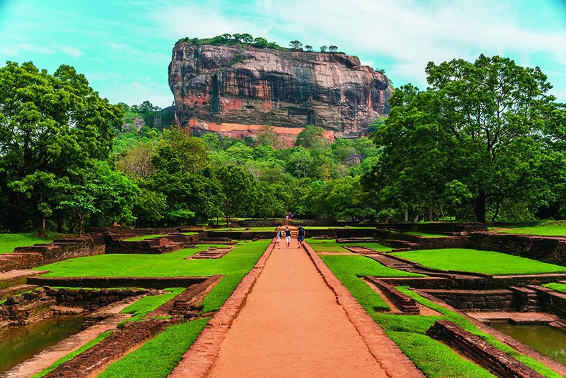

Welcome to Sigiriya
Sigiriya, also known as Lion Rock, is an ancient fortress located in the heart of Sri Lanka. With breathtaking views, rich history, and UNESCO World Heritage status, it attracts travelers from all over the world.
Whether you're a history lover, nature explorer, or cultural enthusiast, Sigiriya offers a truly unforgettable experience.
Ancient Frescoes
View beautiful 5th-century paintings that showcase the artistic brilliance of ancient Sri Lanka.

Royal Gardens
Explore one of the oldest landscaped gardens in the world, complete with fountains and pools.
Breathtaking Views
Climb to the top and take in 360-degree panoramic views of the surrounding jungle and plains.
Ready to explore more?
Learn about the history, see more images, or contact us to plan your visit.
Explore Sigiriya